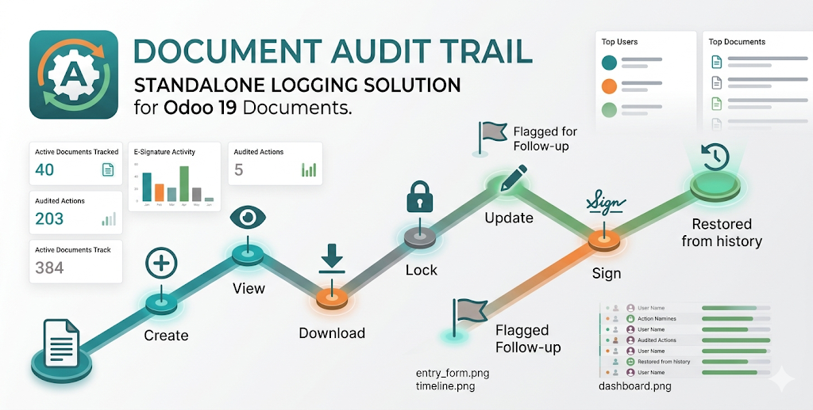
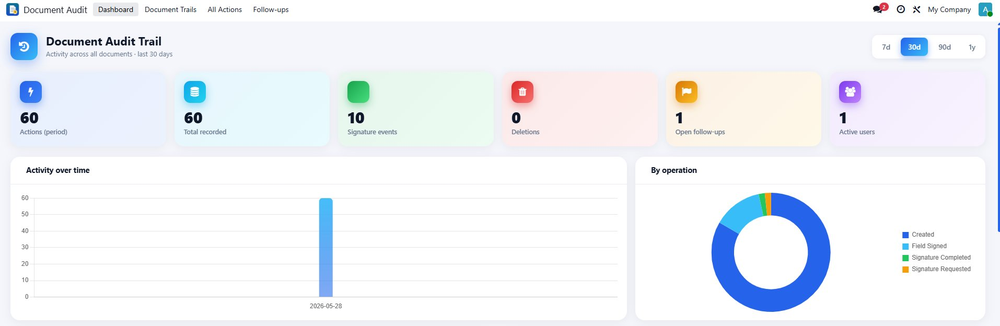
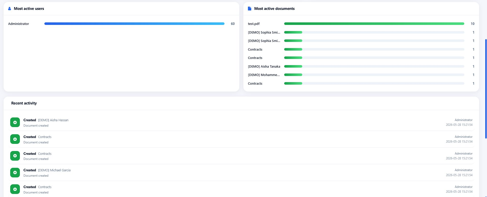
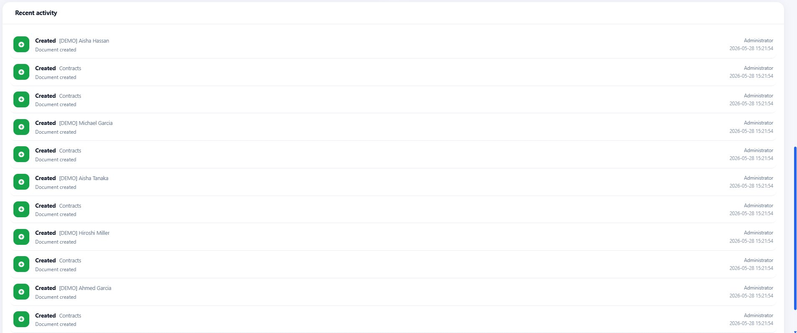
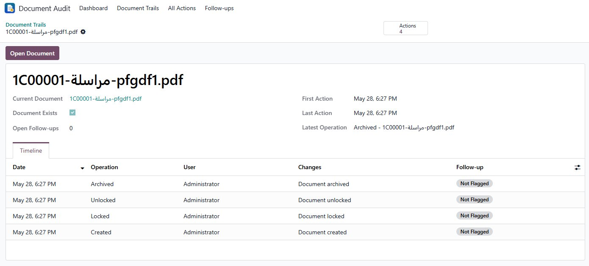
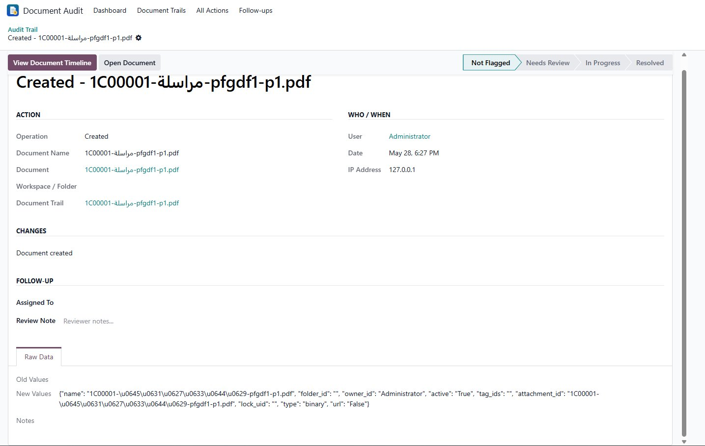
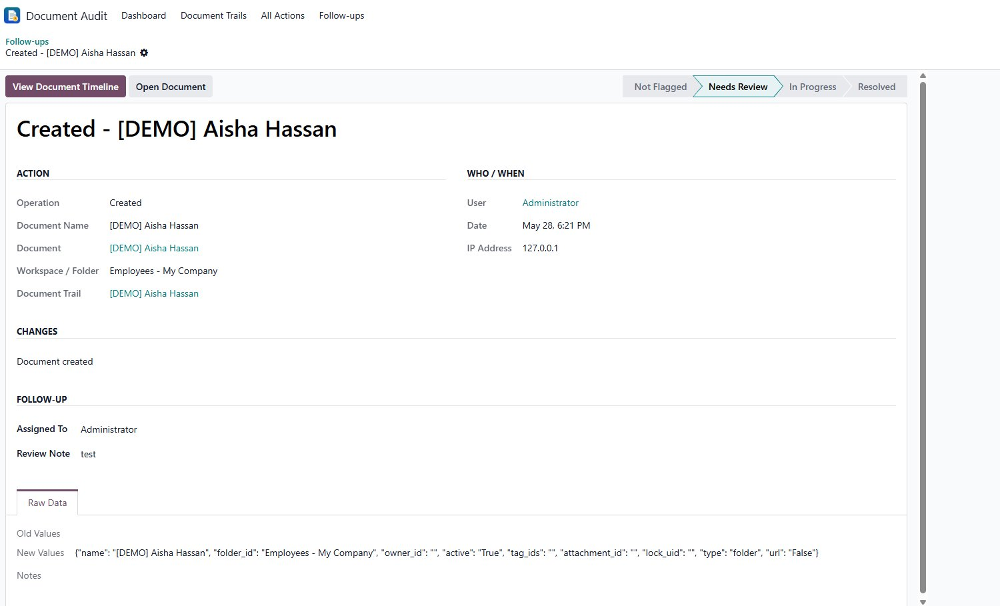

For Odoo 19 Enterprise · Documents & Sign
Know exactly who did what to every document — and when. A complete audit log, per‑document timeline and live dashboard for Odoo 19 Documents.
✓ 20+ tracked actions ✓ E‑signature field log ✓ Live dashboard ✓ Follow‑up workflow

Document Audit Trail gives compliance officers, administrators and managers a single, trustworthy record of everything that happens to their documents. Every action is captured automatically, linked into a per‑document timeline that survives even deletion, and surfaced through an animated analytics dashboard.
It is fully standalone, installs cleanly on any Odoo 19 Enterprise database with Documents and Sign, and every operation can be switched on or off from Settings.
Create, update with a field‑by‑field diff, archive, delete, lock, download, preview, share, split, replace and version restore — all recorded automatically.
Records when a signature field is added or removed in the editor, and one entry per field actually signed — capturing the field type, the signer and the value entered.
Every action on a document is linked into one trail, so the full history stays connected across days — and remains available even after the document is deleted.
A live dashboard with KPI cards, activity‑over‑time and by‑operation charts, most‑active users and documents, and a real‑time activity feed. Click any element to drill in.
Flag any action for review, assign it to a user, add review notes and resolve it. A dedicated Follow‑ups view keeps managers on top of anything that needs attention.
Turn each tracked operation on or off, set an automatic log retention period, and rely on role‑based access so users see only their own actions while managers see everything.

KPI cards, charts and date‑range presets, all interactive.

Most active users, documents and a real‑time activity feed.

One card per document with action counts and review badges.

Every action on a document, linked together in order.

Old/new values, signer, signature field type and value.

Flag, assign and resolve, with a clear status bar.
Built on Odoo 19 APIs (the res.groups.privilege model, the
group_ids field and the OWL 3 framework). It will not run
on Odoo 18 or earlier.
Does it track actions on every document, or only some?
Every document in the database. You can disable any individual operation, or turn the whole audit off, from Settings.
What happens to the log when a document is deleted?
The log survives. The deletion is recorded, and the document's timeline stays available under Document Trails with the stored document name.
Does it record what was signed?
Yes. It logs when each signature field is added or removed, and a separate entry for each field signed — including the field type, the signer and the entered value. Drawn signatures are stored as a placeholder rather than raw image data.
Can regular users see everyone's activity?
No. Regular users see only their own actions. Managers in the audit manager group see everything and own the follow‑up workflow.
Will the log grow forever?
You can set a retention period in Settings; a daily job removes entries older than that. Set it to 0 to keep everything.
Questions, issues or feature requests? We are happy to help.
Support covers installation help, configuration questions and bug fixes for the current Odoo 19 release.
Distributed under the Odoo Proprietary License v1.0 (OPL‑1). A valid purchase grants use on your Odoo databases. Redistribution is not permitted.
Document Audit Trail · v19.0.1.0.0 · by Msn © 2026
Odoo is a trademark of Odoo S.A. This module is an independent product.